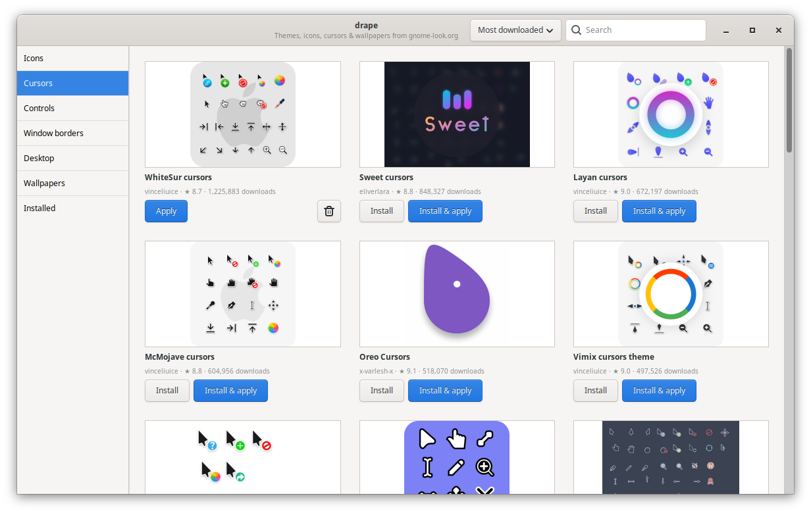
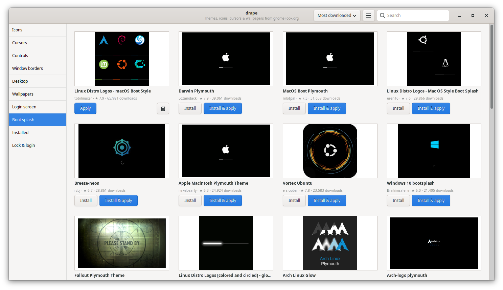
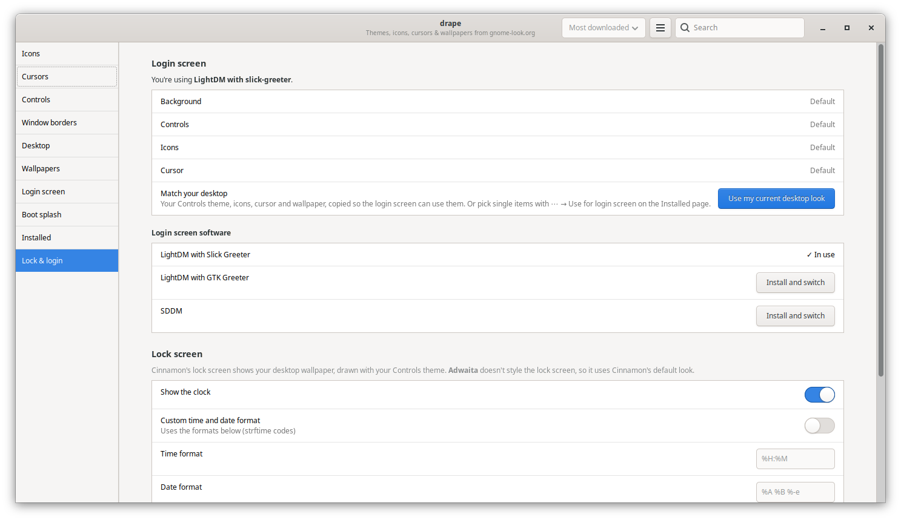
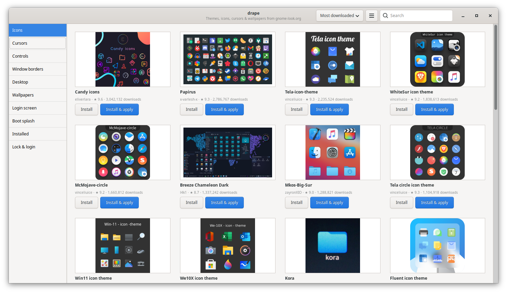
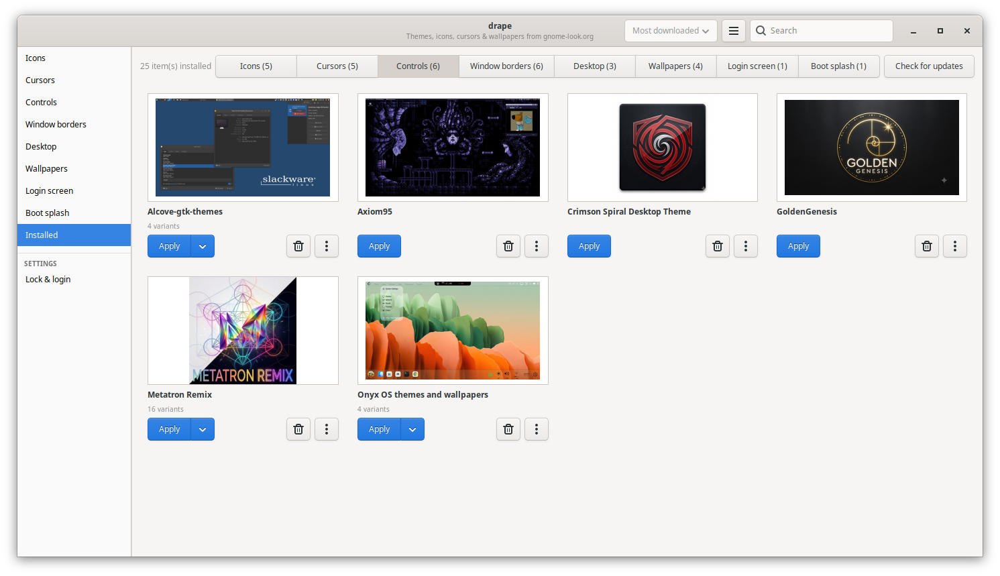
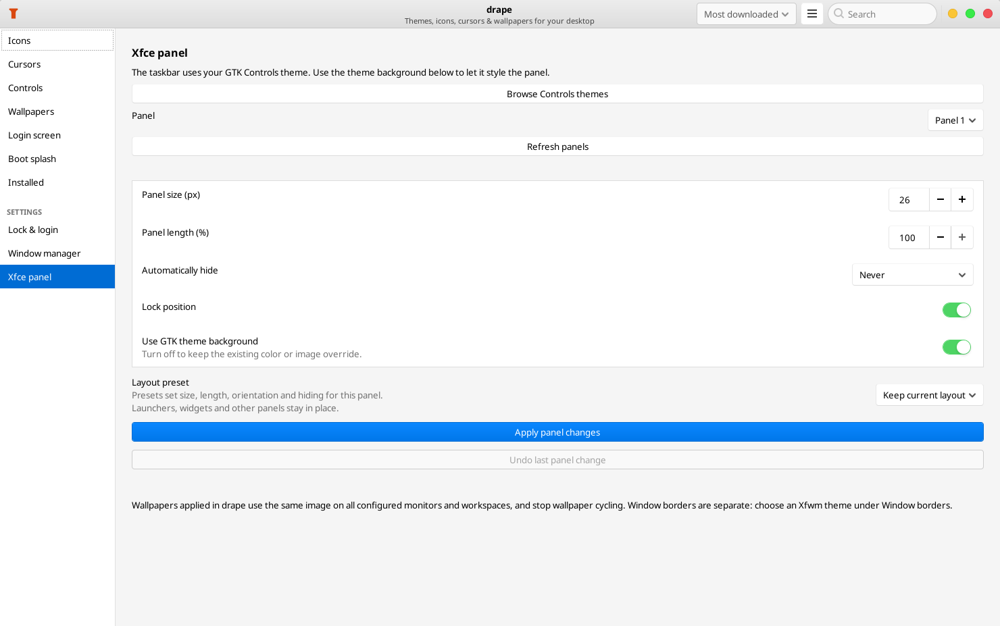
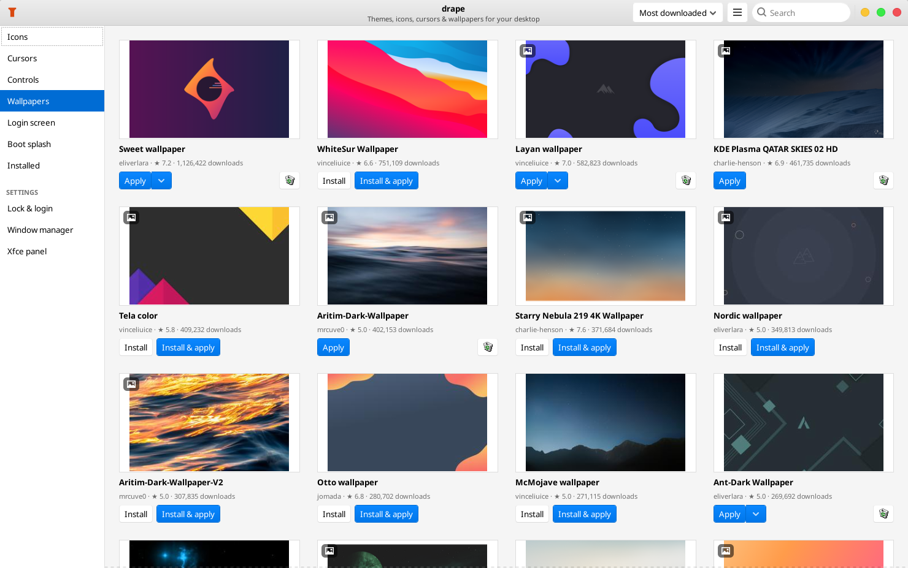

Icons, cursors, themes, wallpapers, login screens and boot splashes from GNOME-Look, KDE-Look and Xfce-Look. One click to install, one click to apply. No archives, no hidden folders.

Most theme tools only hand you whole theme packages. drape gives every part of your desktop its own catalog, so you can pair Papirus icons with Bibata cursors and a mountain wallpaper without touching a terminal.
drape reads each download's file list without fetching it and shows glyphs for what's really inside. If an "icon theme" is only wallpapers, the card says so in red.
The In use tab previews every active part of your desktop, from controls to boot splash, and where each came from. It works for themes drape didn't install too.
Icons, cursors, themes and wallpapers each land where your desktop looks for them. On Cinnamon, wallpapers also show up in Backgrounds settings.
Uses the matching settings for Cinnamon, MATE, GNOME, Xfce or KDE Plasma. Theme formats are checked against your desktop and running window manager.
Packs with Dark, Light or Compact variants get a picker with a live preview drawn from the variant itself: its real icons, cursors, or a sample window in that theme.
Plenty of cursor uploads are Windows .cur/.ani packs. drape converts them to Linux cursors, animations included.
Installed themes sit in the same tabs and picture grid you browse, marked when in use, with Update and Remove on each.
Select installed wallpaper or theme-pack cards across categories, or select all in a category, then delete them together. One confirmation lists the affected items and flags anything currently in use. Failed deletions stay selected for retry.
An Xfce-only sidebar page offers size, length, hiding and GTK theme backgrounds. Choose a top bar, bottom taskbar, bottom dock or left bar preset while keeping your widgets, with Undo for the last panel change.
Browse GNOME-Look, KDE-Look and Xfce-Look through their shared Pling catalog. Website Install links open in drape.
If a new theme shares a name with one you have, drape explains and offers Replace, even for the boot splash or login theme in use.
Tabs open instantly from cached results, previews load in small batches with infinite scroll, and animated previews keep an eye on their CPU cost.
Downloads are checked against available checksums, archives can't write outside their folder, and drape asks before replacing a theme it didn't install.
The compatibility filter follows your desktop and window manager. Mixed packs keep their usable components, and switching window managers updates the catalog and sidebar. Unsupported sections stay hidden in browsing and Installed even when the compatibility filter is off.
| Desktop | Supported appearance settings |
|---|---|
| Cinnamon | GTK controls (including window borders on Cinnamon 5.4+), icons, cursors, desktop/panel themes and wallpapers |
| MATE | GTK controls, icons, cursors, Marco borders and wallpapers |
| GNOME | GTK controls, icons, cursors and wallpapers |
| Xfce | GTK controls, icons, cursors, wallpapers and Xfwm border previews; panel appearance and layout presets with Undo |
| KDE Plasma | Plasma styles, global themes, colors, Aurorae borders, icons, cursors and wallpapers |
For Cinnamon's taskbar, choose a Desktop theme. For KDE's panel, choose a Plasma style. Global themes apply without requesting a panel layout reset. KDE categories follow your Plasma version, and KWin detection supports X11 and Wayland.
Xfce panel presets keep existing widgets and affect only the selected panel. Xfce wallpapers apply to configured monitors and workspaces, discovering active displays on X11 even before their wallpaper settings exist, and stop wallpaper cycling. Xfwm previews show the theme's own artwork. Compiz decorators, GNOME Shell themes, compiled Qt/KWin plugins and Kvantum engines are not supported yet. Unknown downloads stay visible until their contents can be checked. Read the compatibility guide.
Temporary catalog and download server errors are retried twice. Persistent failures identify the download host so you can try later or use an archive from the author.
Window border themes only reach apps whose title bar the window manager draws, so drape tells you which apps they affect instead of leaving you wondering why nothing changed.
Show a sample window opens a window with a classic title bar in your new borders. Check my open windows sorts your open apps into ones that will change and ones that draw their own title bar. It asks first and keeps nothing.
The Window manager page installs Compiz and its settings manager with one password prompt and a real progress bar. On Cinnamon it adds a separate Compiz login session and leaves Cinnamon untouched; on MATE and Xfce it switches live.
CompizConfig Settings Manager runs inside drape, so you can set up effects before you even log into the Compiz session.
Uninstalling Compiz takes out exactly the packages drape installed. Anything you installed yourself, or that other software needs, stays.
Desktop themes made for Cinnamon before 5.4 leave password and logout dialogs see-through; drape flags them and asks before applying one.
Your look doesn't have to stop at the desktop. Changes outside your home folder ask for your password once, and drape never replaces or removes system themes it didn't install.
Browse Plymouth themes and apply one in a click. drape installs it and rebuilds the boot image for you.
SDDM and LightDM web greeter themes, or your own wallpaper, Controls theme, icons and cursor on the LightDM login screen. Use my current desktop look does it all at once.
Theme meant for one you don't have? drape offers to install it and switch to it. Or keep Hide incompatible themes for this desktop on and never see them.
Set Cinnamon's lock screen clock, date format, fonts and message, and see whether your Controls theme styles it. On GNOME, give it its own wallpaper.


What it takes to install one cursor theme from GNOME-Look, KDE-Look and Xfce-Look.
| Step | By hand | With drape |
|---|---|---|
| Find it | Browse the site, pick among several downloads | Open Cursors, pick one |
| Install it | Download, extract, figure out which folder is the theme, copy it to ~/.icons | Click Install & apply |
| Use it | Open settings, find the right dropdown | Already done |
| Remove it | Remember where you put it, delete the right folder | Click Remove |
drape uses your own GTK theme, so it always matches the look you've picked.




Needs Python 3.12+, GTK 3 with PyGObject, Pillow and Requests. Drape offers to install missing dependencies on Arch/CachyOS and Debian/Ubuntu: a y/n prompt in a terminal, or a dialog when launched from the menu. KDE also needs its native Plasma apply tools; Xfce uses xfconf-query. Installing drape needs no root; dependency installation, boot splash and login screen changes ask for administrator authentication.
git clone https://github.com/anolis/drape
cd drape
./install.sh
# adds drape to your menu and handles
# theme catalog Install buttonsUninstall with ./install.sh --uninstall. Themes you installed stay put.
Drape checks for app updates once a day and offers Update and restart. You can also select Check for Drape updates in the ☰ menu. Automatic updating requires the official Git clone on the main branch with no local changes.
For older installs that do not have the updater yet, close Drape and run these commands from the folder you cloned:
cd /path/to/drape
git pull --ff-only
./install.sh
./bin/drapeReplace /path/to/drape with your checkout location. Installed themes and preferences are kept. If Git reports local changes, save or commit them before updating.
On CachyOS or Arch, a No module named 'PIL' error means Pillow is missing. Install the runtime dependencies below, then launch Drape again. This command refreshes package databases and upgrades the system as well, so it works when a fresh live session has no repository databases. Drape's dependency prompt explains the full upgrade before asking for permission when those databases are missing.
sudo pacman -Syu --needed python-pillow python-gobject gtk3 python-requestsdrape search icons papirus
drape install 1166289 --apply
drape search colors arc
drape search lookandfeel
drape list
drape remove 1166289
drape updates